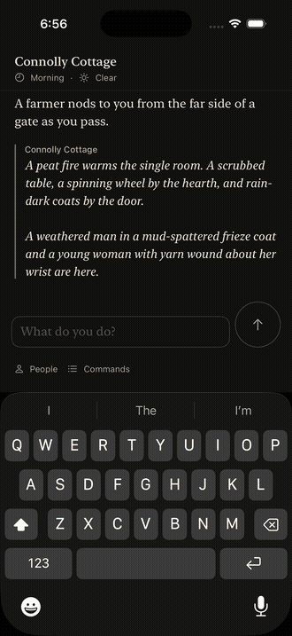

rundale-intent is one Jev decision call
PR #2226 · iPhone 17 Pro simulator against limerick-prod · 2026-10-16
rundale-intent v1 in limerick-prod is the Jev decision definition
(jev-1.13.0 on TypeSafe's own API), published from this branch. The app built from
this branch played the live Endpoint suite against it. Simulator only, not a physical iPhone.
"ask Connolly about the household" at Connolly Cottage
Both Connollys are home, so the game asks which one before anyone answers, then the choice continues the same line.

Full run
| Live test | Result |
|---|---|
| Dialogue turn (intent, then streamed dialogue) | passed |
| Stop during a streamed reply commits nothing | passed |
Free-form movement classified by rundale-intent | passed |
| "ask Connolly" asks which Connolly | passed |
| Reply agrees with the speaker's location | passed |